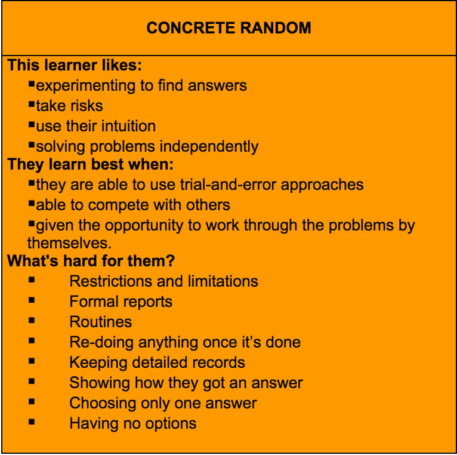
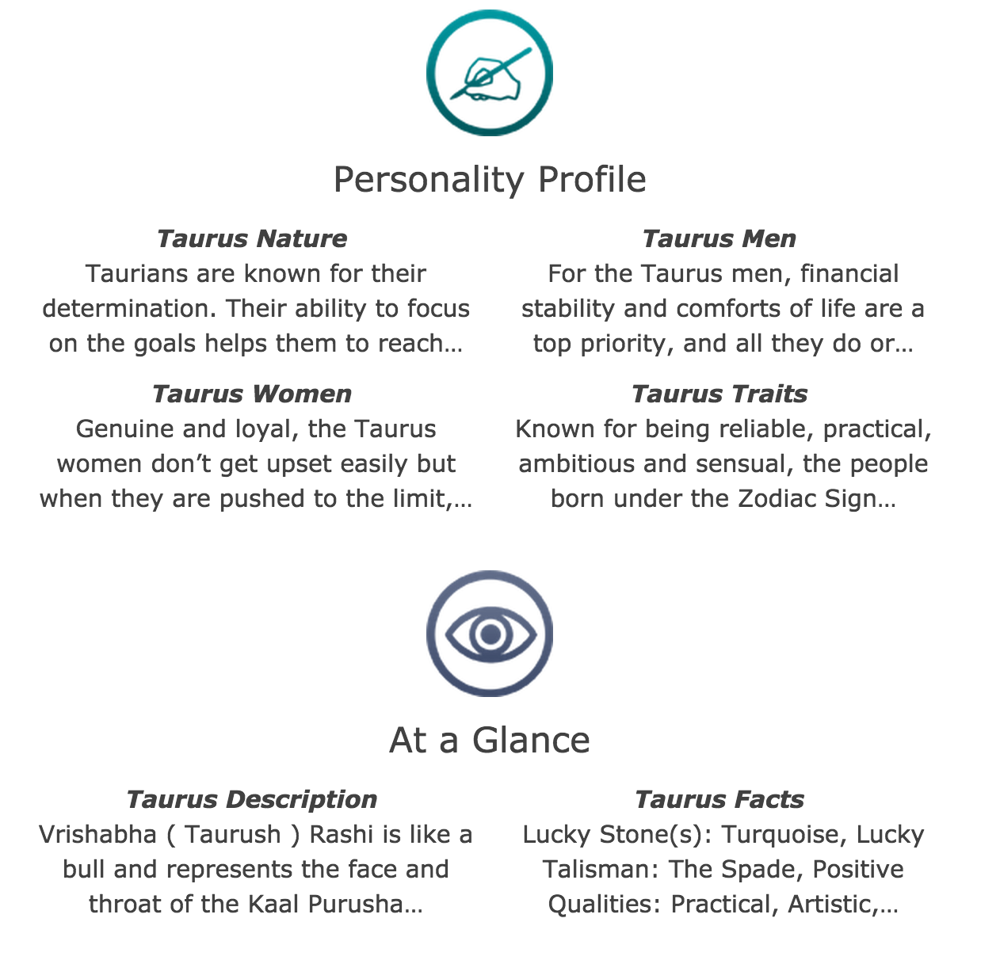

Thinking about thinking
"Think, think, think." - Winnie the Pooh
10/25/14
According to the Gregorc Thinking Style guide, everyone's learning style can be basically graphed out on four Axes.
- Concrete Sequential
- Concrete Random
- Abstract Random
- Abstract Sequential
If you take a nice close look, you'll see the two scales that are in use here are Concrete-Abstract and Random-Sequential. To find your score, you answer a set of 40 multiple choice questions. Then your scores are plotted out on a graph and you can see where your tendencies lay. For instance, I am labeled as Concrete Random. If I then look up the traits of a Concrete Random assessment, I get this.
Now if I were to say, look up some other traits I might have online, I'd find this.
Notice anything similar? Both of these assessments purport to show one how oneself might best get through life. Believe it or not, the Astrology side may be able to offer a closer, more exacting assessment of someone's personality. At least there are 12 possible trait classes. In the GSD version, you are some combination of 4. This is not a very descriptive or complete way to approach a mind. And it feels frankly as outdated as the Left Brain/ Right Brain research.
So I looked into it. And yes, in the past 35 years, this assessment, as well as the idea of learning style assessment as a whole, has been called into question several times. A 2006 study concluded
The data disconfirmed both the two- and four-factor confirmatory models. In the post hoc exploratory factor analyses, many of the factor pattern/structure coefficients were ambiguously associated with two or more of the four theoretical channels as well. Overall, there was little support for the GSD's theoretical basis or design and the concomitant accurate portrayal of one's cognitive learning style.
...[F]ar more work is needed on the GSD if indeed two bipolar dimensions and Gregorc's mediational or channel theory are to be empirically supported and if it is to be appropriately used with samples of adults.
...Consistent with Joniak and Isaksen (1988) and O'Brien (1990), the GSD did not display sufficient empirical evidence to validate the instrument's scores or to confirm Gregorc's theoretical interpretation of four learning style channels or two bipolar dimensions.
Researcher Timothy Sewall compared 4 different learning style assessments in 1986. His review of Gregorc's work went something like "the most appropriate use of this instrument would be to provide an example of how not to construct [an] assessment tool." Not exactly a glowing review.
I'm not saying there is no value to these tools. Rather, they are tools. I am not a Concrete Random. I received a concrete random assessment based on 40 words that I chose. Are there aspects that I identify with on the above chart? Of course. There are aspects on each styles chart that I find in myself. Should I limit my learning tools to those that this test tells me I will learn best with? No. But I also don't believe in all that astrology business. Just a bunch of confirmation bias.
Get out there and learn in every way you can. Try everything. And yes, I see the line under concrete random that says I learn best by experimenting. Shut Up.
Make Awesome